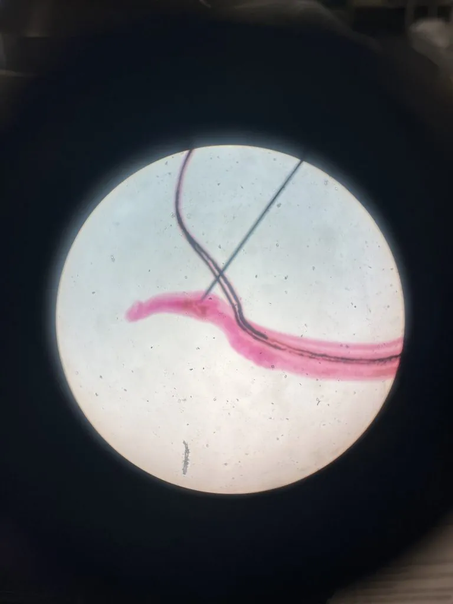

其他无脊椎动物 · 动物界
日本血吸虫 Schistosoma japonicum

寄生在人体血管中的吸虫，以钉螺为中间宿主，尾蚴可钻入皮肤感染，曾在我国南方广泛流行，需做好防护。
- 分类
- 门扁形动物门纲吸虫纲目复殖目科分体科属血吸虫属
- 栖息环境
- 成虫寄生在人体门静脉系统，幼虫阶段在钉螺和水中发育
- 地理分布
- 中国南方、菲律宾和印度尼西亚等流行区
- 保护级别
- 暂无评估；重要寄生虫，需重视公共卫生
物种志
日本血吸虫的成虫雌雄异体，雄虫体长约 1–2 cm，身体两侧有抱雌沟，雌虫细长，常被雄虫抱住，二者合抱寄生在人体的门静脉系统中。它没有消化道，靠体表吸收营养，虫卵随粪便或尿液排出体外。
它的生活史需要钉螺作为中间宿主：虫卵在水中孵出毛蚴，毛蚴钻入钉螺体内发育，释放出尾蚴；人接触含尾蚴的疫水时，尾蚴可钻入皮肤感染，引起日本血吸虫病，出现发热、腹痛、肝脾肿大等症状，慢性感染可导致肝硬化和腹水。日本血吸虫主要流行于中国南方、菲律宾和印度尼西亚等地。预防的关键是避免接触疫水，必要时穿戴防护用品，安全用水，查螺灭螺和粪便无害化处理，确诊后及时用药治疗，我国已通过多年防治显著控制了疫情。
形态与习性
- 食性寄生在人体血管内，靠体表吸收营养
- 体长雄虫约 1–2 cm，雌虫细长
- 中间宿主钉螺是唯一的中间宿主
- 感染途径尾蚴钻入皮肤，接触疫水而感染
- 危害引起血吸虫病，可致肝硬化和腹水
- 预防避免接触疫水、安全用水、查螺灭螺、粪便无害化处理
趣味知识
- 日本血吸虫的雌虫和雄虫常合抱在一起，寄生在人体血管中。
- 钉螺是它的唯一中间宿主，查螺灭螺是防治血吸虫病的重要措施。
- 接触疫水时戴手套、穿防水靴，能减少尾蚴钻入皮肤的机会。
生态关系
- 寄生 → 湖北钉螺 钉螺是日本血吸虫的中间宿主